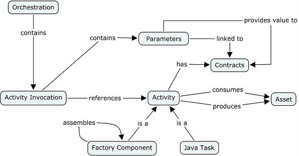

Activity invocation |
An activity invocation is a step of an orchestration which invokes either an activity, i.e. a factory component or Java task.
An activity invocation corresponds to a delegation of work to another activity.
A factory component delegates its work to a factory component or to a Java task. This creates a graph of activity dependencies (and not a tree, because an activaty can be used by several factory components). In a production plan, this graph of activity dependencies defines the execution order to execute activity factory components and Java tasks.
A parameter of an activity invocation is linked to an activity contract. The parameter value is either the value of a factory component contract, an orchestration context, or a local value to the activity invocation.

Figure 1. Activity Invocation Structure